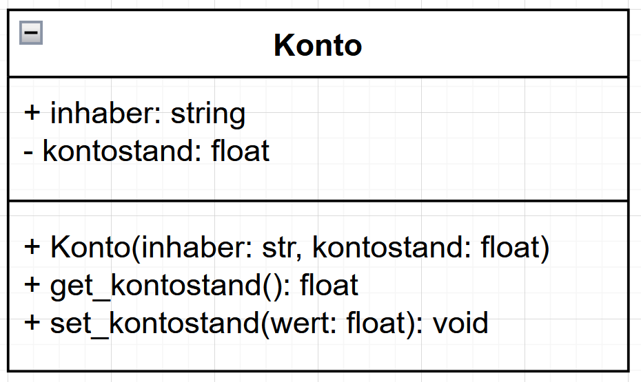

In der objektorientierten Programmierung sollen Objekte ihre Daten selbst verwalten. Du möchtest verhindern, dass jemand von außen direkt auf sensible Daten zugreift oder sie unkontrolliert verändert. Genau dafür gibt es das Prinzip der Kapselung – unterstützt durch Sichtbarkeiten und sogenannte Getter- und Setter-Methoden.
Diese Seite ist ein Lernpfad in drei kurzen Schritten. Jeder Schritt hat dieselbe Form: Erst liest du kurz, worum es geht, dann zeigt dir ein Video (1–2 min, ohne Ton) den Code in Thonny und rechts das Speicherbild mit dem Objekt und seinen Attributen, dann prüfst du mit einer kleinen Frage, ob du es verstanden hast. Halte die Videos ruhig an und tippe mit.
Zum Schluss findest du den Praxisbezug, eine Zusammenfassung und die Übungsaufgaben.
Ein einfaches Konto speichert Inhaber und Kontostand in öffentlichen Attributen. Im Video siehst du im Speicherbild, was passiert, wenn jemand von außen unsinnige Werte einträgt – und wie die Idee der Kapselung das verhindert. Achte am Ende auf die Zeichen +, # und - im Klassendiagramm.
class Konto:
def __init__(self, inhaber, kontostand):
self.inhaber = inhaber
self.kontostand = kontostand
konto1 = Konto("Alex", 100)
konto1.kontostand = -5000 # Das sollte nicht erlaubt sein.
konto1.kontostand = 10000000 # Geld „aus dem Nichts“ – ebenfalls ein Fehler.
In UML-Diagrammen wird die Sichtbarkeit durch Symbole angegeben:
+ → öffentlich- → privat# → geschütztDas gilt sowohl für Attribute als auch für Methoden.
Weiter mit Schritt 2: Privat und geschützt in Python →
In Sprachen wie Java gibt es Schlüsselwörter wie private oder public. Python macht das anders: Hier regeln Namenskonventionen die Sichtbarkeit. Achte im Video darauf, unter welchem Namen das private Attribut __kontostand wirklich im Objekt steht, was Python beim Zugriff von außen meldet und was eine Zuweisung von außen im Speicherbild anrichtet.
name: öffentlich (public) – darf von überall verwendet werden._name: geschützt (protected) – nur für die Klasse und ihre Unterklassen gedacht. Das ist reine Konvention; Python verhindert den Zugriff nicht.__name: privat (private) – Python benennt das Attribut intern in _Klassenname__name um („Name Mangling“). Von außen ist es unter dem Namen __name nicht erreichbar.Danach: Aufgabe 4.6.1 – Sichtbarkeit erkennen.
Weiter mit Schritt 3: Getter und Setter mit Prüfung →
Um ein Attribut zu schützen und trotzdem Zugriff zu erlauben, nutzt man Getter (zum Lesen) und Setter (zum kontrollierten Ändern). Im Video läuft der Setter einmal mit einem ungültigen und einmal mit einem gültigen Wert. Achte darauf, welcher Zweig der if-Anweisung jeweils läuft und wann sich der Wert im Objekt ändert.
Zum Nachlesen steht der Setter in Beispiel 1. Beispiel 2 zeigt, wie fachliche Methoden einen allgemeinen Setter ersetzen, und erklärt noch einmal genau, was beim Zugriff von außen passiert.
Danach: Aufgabe 4.6.2 – Temperatursensor schützen.
Denk an komplexe Systeme wie Banking-Apps oder Spiele: Wenn jede Komponente einfach alles ändern darf, entstehen Fehler und Chaos. Kapselung hilft, klare Schnittstellen zu schaffen – für sauberen und wartbaren Code. In fortgeschrittenem Python werden Getter und Setter oft mit @property geschrieben; das Prinzip bleibt dasselbe.
Alltag: Am Geldautomaten kannst du nur über festgelegte Funktionen (Abheben, Kontostand anzeigen) auf dein Konto zugreifen – nicht direkt auf die Datenbank der Bank. Das ist Kapselung im Großen.
Beruf: In der Bank- und Versicherungs-IT – etwa bei Rechenzentren großer Finanzdienstleister in Sachsen – verlangen Sicherheitsrichtlinien, dass sensible Daten nur über geprüfte Methoden verändert werden. Jede Änderung wird dort zusätzlich protokolliert. Softwareentwicklerinnen und -entwickler sowie IT-Sicherheitsfachleute prüfen in Code-Reviews, ob Attribute ausreichend gekapselt sind.
Öffentliche Attribute kann jeder von außen beliebig ändern. Kapselung verbirgt die Daten im Objekt und bietet Methoden an, die Änderungen prüfen. In Python ist _name geschützt (nur eine Abmachung) und __name privat: Python benennt das Attribut in der Klasse in _Klasse__name um, sodass objekt.__name von außen einen AttributeError auslöst und eine Zuweisung von außen nur ein neues Attribut anlegt. Getter lesen, Setter ändern nach einer Prüfung – oft passen fachliche Methoden wie einzahlen und abheben noch besser.
Kapselung ist ein Grundprinzip der objektorientierten Programmierung: Ein Objekt verbirgt seine inneren Daten und stellt nach außen nur ausgewählte Methoden zur Verfügung, über die auf die Daten zugegriffen wird.
Sichtbarkeit legt fest, ob und von wo aus auf die Bestandteile eines Objekts (Attribute, Methoden) zugegriffen werden darf.
In Python ist nichts wirklich „unsichtbar“. Mit _ oder __ machst du aber deutlich: Dieses Attribut soll nur intern verwendet werden. Ein doppelter Unterstrich schützt zusätzlich durch Umbenennung vor versehentlichem Zugriff.
Im Konto ohne Kapselung wird nach konto1 = Konto("Alex", 100) die Zeile konto1.kontostand = konto1.kontostand - 250 ausgeführt. Welchen Wert hat der Kontostand danach, und meldet Python einen Fehler? Mit welchem UML-Zeichen müsste kontostand im Klassendiagramm stehen, damit so etwas nicht vorgesehen ist?
Der Kontostand ist −150, Python meldet keinen Fehler – das Konto kann sich nicht wehren. Im Klassendiagramm sollte das Attribut privat sein: - kontostand. Geändert wird es dann nur über öffentliche Methoden (+), die prüfen können.
Mit der Klasse Konto aus dem Video (privates Attribut __kontostand) wird k = Konto("Ben", 40) angelegt. Was liefern k._Konto__kontostand und k.__kontostand? Was liefert k.get_kontostand(), nachdem jemand k.__kontostand = 0 ausgeführt hat?
k._Konto__kontostand liefert 40 (so heißt das Attribut intern – benutzen sollte man das aber nicht). k.__kontostand löst einen AttributeError aus. Die Zuweisung k.__kontostand = 0 legt ein neues, zusätzliches Attribut an; k.get_kontostand() liefert weiterhin 40.